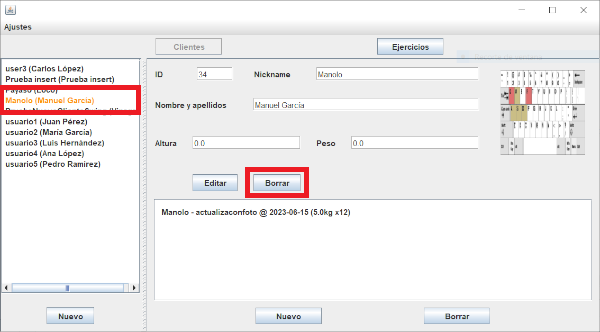
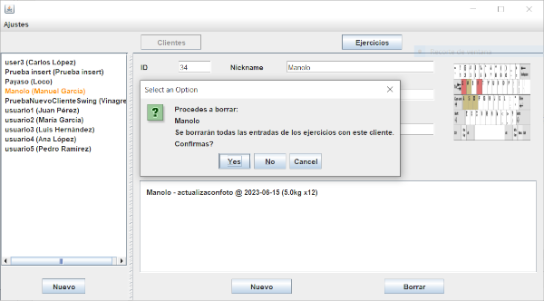
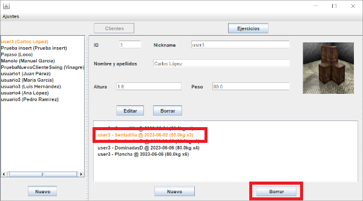

Hay dos tipos de bajas.
Por una lado tenemos la baja recursiva, la cual
consiste en borrar todos los ejercicios realizados, sea porque vas a borrar
un cliente o porque vas a borrar un ejercicio.
Baja recursiva
Para realizar este borrado, selecciona un elemento de la lista para mostrarlo
en la sección de detalles y pulsa el botón que ves en la imagen.

Al pulsar el botón, se abrirá un diálogo pidiendo confirmación, puesto que puede llegar a borrar
muchas entradas de la tabla.

Baja de actividades
Esta baja se hace sobre los elementos que posee la entrada. Para realizar esta baja, debemos
de seleccionar una entrada en la lista mostrada por los detalles, vista a continuación.
